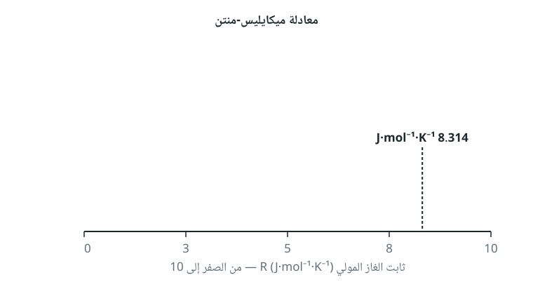

معادلة ميكايليس-منتن
Michaelis-Menten equation
معادلة ميكايليس-منتن تصف سرعة التفاعل الإنزيمي كدالة في تركيز المادة المتفاعلة: تزداد السرعة خطياً عند التراكيز المنخفضة وتشبع عند العالية، وثابت ميكايليس K_m هو التركيز الذي تبلغ عنده السرعة نصف الحد الأقصى.
معادلة ميكايليس-منتن تصف سرعة التفاعل المحفَّز إنزيمياً: v = V_max·[S]/(K_m + [S])، حيث v السرعة وV_max السرعة القصوى عند تشبع الإنزيم و[S] تركيز المادة المتفاعلة وK_m ثابت ميكايليس. المعنى أن الإنزيم يرتبط بالمادة المتفاعلة في معقّد، وحين تشغل المادة كل مواقع الإنزيم يبلغ التفاعل حده الأقصى ولا تزيد السرعة بزيادة التركيز. وK_m هو تركيز المادة الذي تعطي عنده السرعة نصف V_max، وهو مقياس لميل الإنزيم إلى مادته: K_m صغير يعني ميلاً كبيراً. مثال: إنزيم بـV_max = 100 µmol/(L·min) وK_m = 5.0 mmol/L، عند [S] = 5.0 mmol/L تكون v = 100 × 5/(5+5) = 50 µmol/(L·min).
كيف تعمل الظاهرة؟
الإنزيم بروتين له موقع فعال يرتبط به المادة المتفاعلة في معقّد، ثم يحوّلها إلى ناتج ويحررها. والخطوات ثلاث: ارتباط سريع، وتحفيز قد يكون بطيئاً، وتحرر. وحين يكون تركيز المادة منخفضاً، تكون معظم المواقع الفعالة فارغة، فزيادة التركيز تزيد عدد المعقّدات المتكونة وترفع السرعة خطياً. وحين يرتفع التركيز، تُشغل معظم المواقع، فتصير السرعة محدودة بعدد المواقع لا بعدد الجزيئات المتاحة، فتبلغ حدّاً. وهذا التشبع هو ما يميز الحفز الإنزيمي عن التفاعل غير المحفَّز، وهو أساس قياس الإنزيمات في المختبرات السريرية.
العلاقة بالأرقام
v = V_max[S]/(K_m + [S]). وبالمقلوب (معادلة لينويفر-بيرك): 1/v = (K_m/V_max)(1/[S]) + 1/V_max، وهي خط مستقيم بين 1/v و1/[S] ميله K_m/V_max وتقاطعه 1/V_max. وk_cat = V_max/[E]_total، والكفاءة الحفزية k_cat/K_m. مثال عددي: V_max = 100، K_m = 5.0 → عند [S]=1.0: v = 100/6 = 16.7؛ عند 5.0: 50.0؛ عند 20: 80.0؛ عند 100: 95.2. والتحقق من لينويفر-بيرك عند [S]=20: 1/v = (5/100)(1/20) + 1/100 = 0.0025 + 0.01 = 0.0125 → v = 80.0.
مفاهيم متقاربة
يُفرَّق بين ميكايليس-منتن والتثبيط: المعادلة تصف إنزيماً حراً بلا مثبطات؛ والمثبط التنافسي يزيد K_m ويُبقي V_max، وغير التنافسي ينقص V_max ويُبقي K_m. ويُفرَّق بين K_m وK_d: الأول ثابت حركي مركّب، والثاني ثابت تفكك حراري ديناميكي. ويُفرَّق بين V_max والسرعة المقيسة: V_max حدّ نظري لا يُبلغ عملياً، والسرعة المقيسة دائماً أقل. وأخيراً يُفرَّق بين الحفز المتجانس والإنزيم المرتبط بغشاء أو حامل، حيث تظهر معادلات مختلفة لأن الانتشار يصير محدِّداً.
حدود التطبيق
المعادلة تفترض أن تركيز المادة أكبر بكثير من تركيز الإنزيم، وأن النظام في حالة مستقرة، وأن الارتباط والتفكك سريعان مقارنة بالتحفيز. ولا تصح حين يكون تركيز الإنزيم مقارباً لتركيز المادة، فتُستعمل معادلات كاملة. ولا تصف التثبيط أو التنشيط أو الارتباط التعاوني، حيث تُستعمل معادلة هيل. وأخيراً في الخلايا الحيّة لا تكون التراكيز متجانسة، والإنزيمات كثيراً ما تكون في مسارات متسلسلة، فتصير السرعة محددة بالمسار كله لا بإنزيم واحد.

| الكمية | القيمة | المصدر |
|---|---|---|
| السرعة عند [S] = K_m | 50.0 µmol/(L·min) | [3] |
المصادر
- 1 CODATA Value: molar gas constant — NIST — CODATA 2022 recommended values (2024). physics.nist.gov/cgi-bin/cuu/Value?r · اطُّلع عليه 2026-11-21
- 2 CODATA Value: Avogadro constant — NIST — CODATA 2022 recommended values (2024). physics.nist.gov/cgi-bin/cuu/Value?na · اطُّلع عليه 2026-11-21
- 3 The International System of Units (SI), 9th edition (2019) — BIPM — Bureau International des Poids et Mesures (2019). www.bipm.org/en/publications/si-brochure · اطُّلع عليه 2026-11-21
استشهد بهذا المصطلح
الصيغتان مبنيتان من بيانات الصفحة نفسها: العنوان والتاريخ ورابط النسخة المنشورة.
معادلة ميكايليس-منتن — Michaelis-Menten equation. (2026). ديوان المعرفة — انفراد. https://infiradev.com/diwan/terms/term-michaelis-menten.html
@misc{term-michaelis-menten2026,
title = {معادلة ميكايليس-منتن},
titleaddon = {Michaelis-Menten equation},
howpublished = {{ديوان المعرفة — انفراد} — مرجع علمي عربي},
year = {2026},
url = {https://infiradev.com/diwan/terms/term-michaelis-menten.html},
urldate = {2026-11-26},
note = {مراجعة علمية: hermes (مراجعة معتمدة 2026-11-26)}
}
راجعه: hermes (مراجعة معتمدة 2026-11-26) · 2026-11-26 · آخر تحديث 2026-11-21